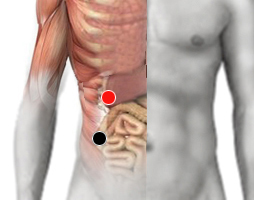

Klepsiella Pneumoniae
colon ascendente - hígado
colon ascendente - riñón (D)
ciego - riñón (D)
lacrimal - lacrimal
dedo medio - dedo medio
maxilar (sup) - maxilar (sup)
porta - porta

Generalidades:
Hepatitis E. Principal manifestación: Gastritis. Segunda manifestación: Fatiga crónica. Ocaciona problemas pulmonares o en cabeza. En embarazadas origina la Diabetes gestacional (después de la semana 20).
En algunas ocasiones se llega a encontrar en el lacrimal; en ese caso produce síntomas como: Rinitis y Laringitis. Produce sangrado nasal (epistaxis), Bronquitis, Neumonías, Meningitis, Tos Crónica.
Representa uno de los principales agentes patógenos para el humano causando neumonía, infecciones del tracto urinario, espondinitis anquilosante (un tipo de artritis provocada por el sist. autoinmune), sepsis.
Transmisión:
Es muy común el contagio en hospitales por los métodos invasivos utilizados. Los grupos de más alto riesgo son neonatos, diabéticos, alcohólicos, pacientes con EPOC y pacientes en cuidados intensivos. Es muy resistente a los antibióticos.